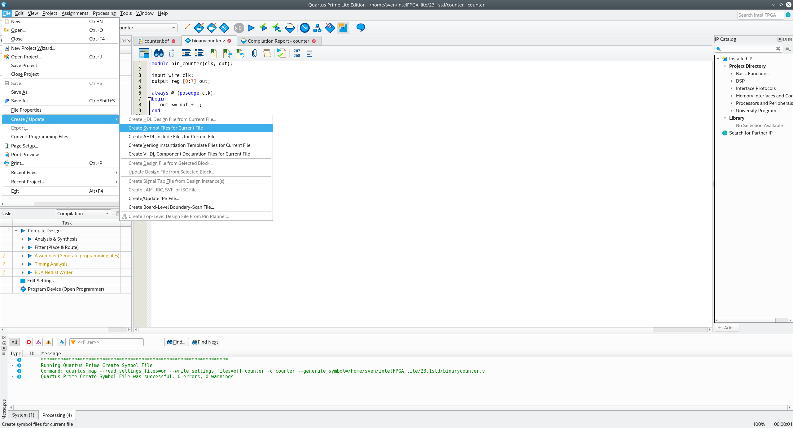
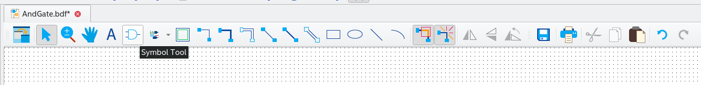
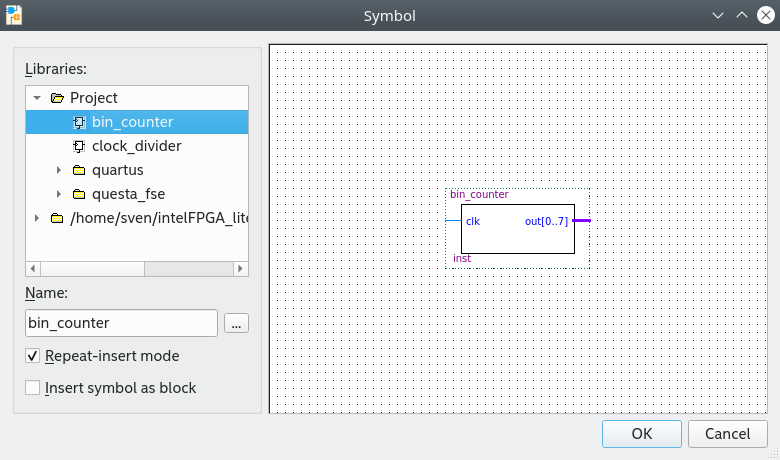
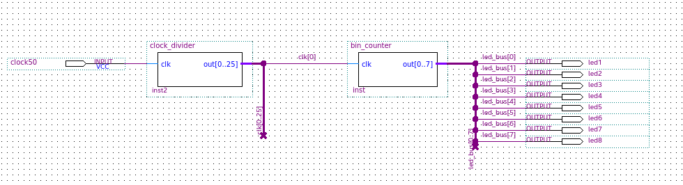
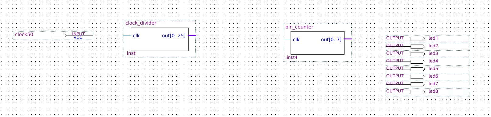
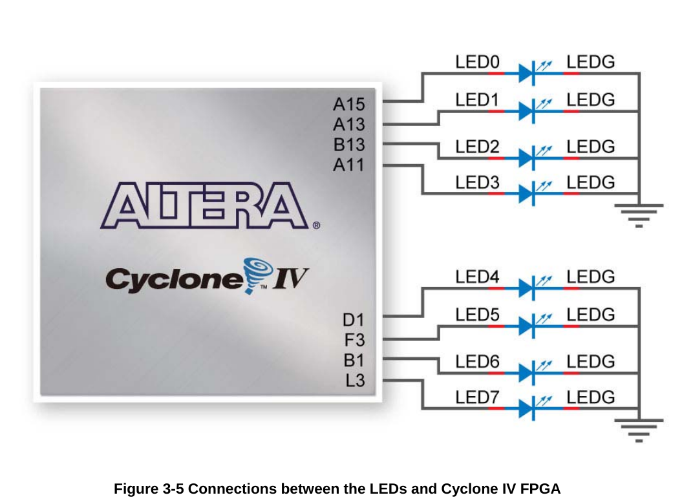
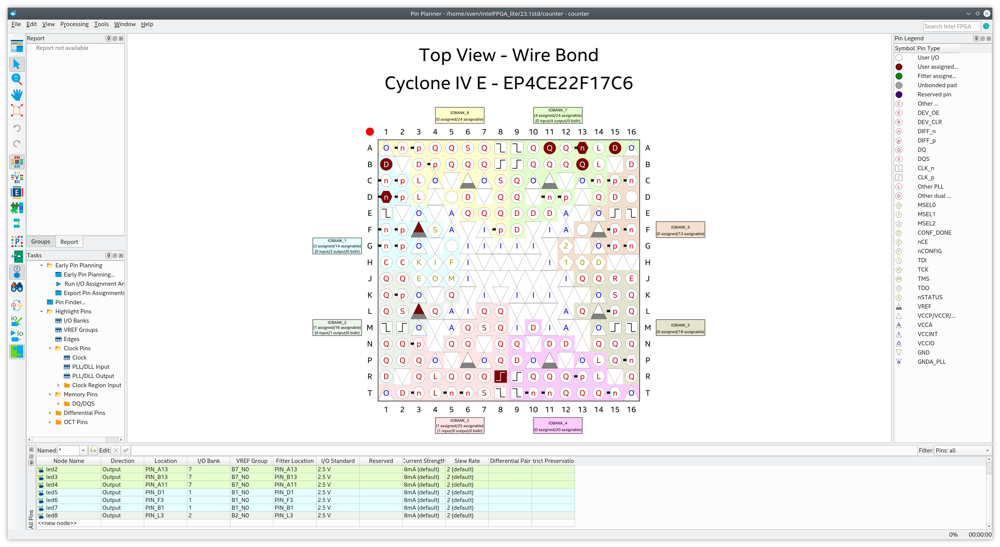
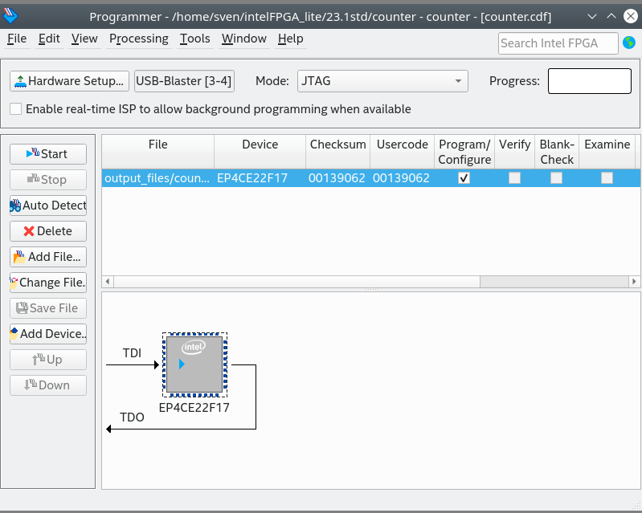

Sie haben sich also entschieden, FPGA-Programmierung zu lernen, und haben die Voraussetzungen aus introduction 0 sowie simple logic circuit über die BDF-Dateien von Quartus erfüllt. Heute möchten wir Ihnen zeigen, wie Sie Quartus verstehen, indem wir ein weiteres Hardware-Äquivalent des in der Softwarewelt verwendeten Hallo-Welt-Programms erstellen – wir programmieren einen Binärzähler, der durch die LED-Reihe angezeigt wird, die auf unserer DE0-nano-Platine verfügbar ist. Dazu verwenden wir sowohl die Blockdiagrammdateien (bdf) von Quartus als auch die beliebte HDL (Hardware Description Language) Verilog.
Wir öffnen also zunächst Quartus über das Desktop-Symbol. Dann gehen wir zum Menü „Datei >> Assistent für neues Projekt“, wie unten dargestellt, und klicken darauf. Dann geben wir ihm den Namen „counter“, klicken uns schnell durch die Schritte des Assistenten, es gibt nichts weiter zu tun, klicken Sie einfach auf OK, bis der Assistent abgeschlossen ist . In diesem Tutorial erstellen wir die folgenden Dateien:
-
binarycounter.v - Das Verilog-Modul mit dem Binärzähler
-
clock_divider.v - Ein Clock-Teiler, um den Systemtakt auf eine niedrige Frequenz zu verlangsamen, der das Auge noch folgen kann - counter.bdf - Eine Quartus-Schaltplan-Datei, um beide oben genannten Module zu verbinden und sie mit den Pins zu verbinden
Wir beginnen mit dem Binärzähler.
Binärzähler in Verilog
Zuerst definieren wir das Modul und geben ihm einen Namen sowie die in(s) und out(s), die es als Parameter trägt. Im Moment ist das sehr einfach: Wir haben clk, was kurz für clock als Eingang steht, und einen Ausgang namens out.
module bin_counter(clk, out);
Als Nächstes definieren wir die Eingänge bzw. Ausgänge. Der Taktgeber wird als Eingang von einem Draht definiert, da er in das Modul geht und nur ein einziges Signal, das hoch oder niedrig werden kann. Für den Ausgang definieren wir ein Register – es wird durch das Schlüsselwort reg definiert –, um die Werte zu speichern, gefolgt von eckigen Klammern, um zu definieren, dass der Ausgang ein Array von 8 Bits ist, [0:7] bedeutet, dass wir 8 Bits haben, beginnend mit Index 0 und endend mit Index 7.
module bin_counter(clk, out);
input wire clk;
output reg [0:7] out;
Dann definieren wir das wesentliche Modul, indem wir angeben, was zwischen der begin- und der end-Anweisung geschieht, bevor wir das Schlüsselwort always, gefolgt von einem '@', und die Sensibilitätsliste in Klammern verwenden. Die Sensibilitätsliste listet den Taktgeber mit podsedge auf, d. h. er reagiert auf Übergänge von niedrig (0) zu hoch (1). Zwischen begin und end erhöhen wir einfach den Zähler des out-Signals.
module bin_counter(clk, out);
input wire clk;
output reg [0:7] out;
always @ (posedge clk)
begin
out <= out + 1;
end
Schließlich beenden wir die Modulbeschreibung mit der Anweisung „endmodule“.
module bin_counter(clk, out);
input wire clk;
output reg [0:7] out;
always @ (posedge clk)
begin
out <= out + 1;
end
endmodule
Taktgeber-Teiler in Verilog
Jetzt können wir unser Taktsignal von der FPGA-Platine mit dem Eingang unseres Binärzählers verbinden. Aber halt – es gibt ein Problem: Wenn Sie einen Blick in das Datenblatt oder das Benutzerhandbuch der Platine werfen, sehen Sie, dass der externe Taktgeber auf der DE0-nano-Platine eine Frequenz von 50 MHz hat. Wir müssen diese auf eine Frequenz von etwa 1 Hz herunterteilen, was einem Zyklus pro Sekunde entspricht. Dazu müssen wir das Signal durch etwa 50.000.000 teilen. Um zu berechnen, wie viel Bitbreite wir benötigen, müssen wir eine kleine Berechnung durchführen:
\[50.000.000 = 2^x\]
\[x = log_{2}(50.000.000)= 25.575\]
Da wir das Ergebnis aufrunden müssen, benötigen wir eine Bitbreite von 26 Bit. Damit hätten wir eine Frequenz von (50 MHz / 2^26) = 0,745 Hz als Ergebnis. Das ist weniger als 1 Hz, aber damit können wir vorerst leben. Was nun folgt, ist die einfache Implementierung des Zählers:
module clock_divider(clk,out);
input wire clk;
output reg [0:25] out = 0;
always @ (posedge clk)
begin
out <= out + 1;
end
endmodule
Zähler BDF
Zuletzt erstellen wir die Datei counter.bdf, die alles zusammenhält, wie unten dargestellt.
Zuerst müssen wir die Datei binarycounter.v öffnen und auf File >> Create / Update >> Create Symbol Files for Current File klicken, wie in der folgenden Abbildung dargestellt. 
Wir öffnen die Datei/Registerkarte clock_divider.v und wiederholen den obigen Schritt.
Nach diesem Schritt finden wir die gerade neu erstellten Dateien in der Symbolbibliothek, öffnen die Symbolbibliothek (siehe Bild unten)  und finden die Module im Verzeichnis project.


Als Nächstes folgen Sie den verschiedenen Build-Schritten in der Schaltplan-Datei:


Bild:../quartus_counter_schematic_2.png[Quartus - Counter.bdf 2]
Beachten Sie bei der Zuweisung der Busbreite unter „Eigenschaften“, dass die Syntax „..“ anstelle von „:“ (Semikolon) lautet!
Bild:../quartus_counter_schematic_3.png[Quartus - Counter.bdf 3]
Bild:../quartus_counter_schematic_4.png[Quartus - Counter.bdf 4]
Bild:../quartus_counter_schematic_5.png[Quartus - Counter.bdf 5]
Bild:../quartus_counter_schematic_6.png[Quartus - Counter.bdf 6]
Bild:../quartus_counter_schematic_7.png[Quartus - Counter.bdf 7]
Pin-Zuordnung
Als Nächstes müssen wir die Design-Eingänge und -Ausgänge mit den physischen Pins verknüpfen. Unten sehen Sie das Bild des Clock-Pins. Vergessen Sie nicht, vorher die Synthese oder zumindest die Analyse durchzuführen.
Bild:../de0nano_clock.png[DE0-nano Clock]
Und das Bild der LED-Ausgänge.

Und hier das Bild des Pin-Planers
Für die DE0-nano-Platine müssen wir die Pins also wie folgt zuweisen:
-
clock50 | PIN_R8
-
led1| PIN_A15
-
led2| PIN_A13
-
led3| PIN_B13
-
led4| PIN_A11
-
led5| PIN_D1
-
led6| PIN_F3
-
led7| PIN_B1
-
led8| PIN_L3

Programmierung des Geräts
Jetzt, da wir mit der ganzen Arbeit fertig sind, können wir die vollständige Synthese durchführen und unsere Platine programmieren. Gehen Sie zu „Tools“ >> „Programmer“ oder klicken Sie einfach auf das Programmierersymbol und verbinden Sie Ihr schönes FPGA-Board über USB mit dem Computer. Die Hardware sollte erkannt und angezeigt werden, ebenso die ausgewählte Sof-Software-Datei.

Schließlich sollten Sie sehen, wie die LEDs auf der Platine mit einer Frequenz von 0,745 Hz zählen.
Hier sind auch die Projektdateien: Link:../counter.tar.gz[Counter-Projektdateien]
Hinweis: Ich habe dieses Tutorial von hier gestohlen, aber meine eigenen Bilder und meinen eigenen Stil hinzugefügt.